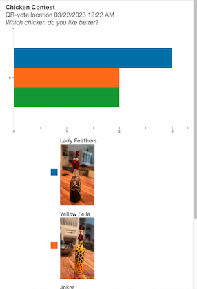
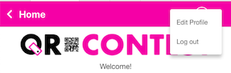
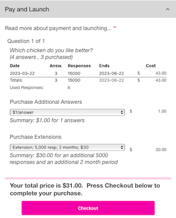
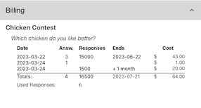
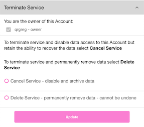

Home Tab
Recent Results
Selecting this section will allow you to see the latest results from your contest(s). If nothing is shown, then there are no recent results to display. Results are shown in graphical format (pie chart, bar chart, etc.).

You may go to the Results bottom tab to see all of your contest’s results.
Viewing Mode
Viewing Mode is used from a mobile device to allow you to test your contest without registering any votes.
The default is for your device to record votes after you scan a QR code. To test your QR codes, you may select VIEW RESULTS to see how many votes have been cast, but your scan will not register as a vote.
Set QR Scan Mode to RECORD votes from this device.
Set QR Scan Mode to VIEW RESULTS from this device - responses will not be recorded.
Billing Transaction
This section will only show up immediately after you have purchased something. See Purchase Confirmation for details. It will show a summary of the purchase here - but only directly after the purchase. If you want to see a list of all purchases, click the menu icon in the upper right and choose Edit Profile, then Billing. All transactions will show up there. If you want to see the billing items for a particular Contest, go to the Contest Detail page and scroll down to the Pay and Launch section.
Menu
In the upper right corner of the Home tab is the 3 bar menu. This menu allows you to edit your profile (Change Password, Notifications/Emails, Billing, Dashboard Key, Terminate Service) or Log Out.

Below are the sections after choosing Edit Profile.
Change Password
Your username will show at the top of the section, followed by a place to enter your old password and to enter your new password and confirm it. Once you hit the button, your password will be reset. If you forget your password, see the Forgot Password section.

Notifications/Emails
You may receive Notifications from the app by selecting which notifications you would like to receive via email. You may subscribe or unsubscribe to any of these in this section. Also, when you receive the email, there is an unsubscribe link provided to also access your preferences from the email.
Rsponse Quota - Receive information about depleting Response quota by subsrbing to this mailing list. The default is ‘on’. You will get notifications for every 25% overage that you have. So, if you initially paid for 1,000 responses and you now have 1,250 responses, you will get an email letting you know you are over your limit. For every 25% over, you will get a new email until the campaign time runs out, or you pay for the overage. Your contest will still be recording votes when you go over your response limit, however, you will not see them unless you go back to the Pay and Launch section and purchase the overage responses by selecting Purchase Responses to Offset Overage of X Responses - where X is the number of responses you are over. You should try go guess accurately how many responses you will get, as the overage price is slightly more than if you had purchased enough responses in the beginning. Once you pay for the overage, your Responses will show up in your Results.

Subscription ending - Notify Me of approaching Quota end via Email.
When you purchase a Contest, there is a pre-defined timeframe associated with the Contest. You may receive a notification when there is 1 week or 1 day left in your Contest. You may increase the time of your contest by going to the Pay and Launch section of the Contest Detail page. Above is a sample where a new Answer was added and a Purchase Extension was chosen to add 5,000 responses and 2 more months.
Billing
The Billing section will contain all of the transactions you have had. They will be separated by Contest name and Questions. You can see each transaction you have had for each Question. The below summary shows that we paid for 1 Contest called Chicken Contest with 1 Question Which chicken do you like better?. We purchased it on 3/22/2023 with 3 answers and 15,000 responses (remember this was a big contest at a rodeo). Then, 2 days later we added an Answer (a new chicken) and paid for that. The same day, we added 1,500 more responses because they sold out the rodeo and we thought we could use the padding.

Dashboard Key
The Dashboard Key section will show your personal Dashboard API Key. This key is used as a part of the URL for your contest results dashboards. If you change the API Key, the URLs you generated before will no longer be valid. So, you should only change (called Roll API Key) the API Key when you want to disable all prior URLs. After you ‘roll’ the API Key, you may go to each contest’s Dashboard section and generate a new URL to be shared.
Terminate Service
If you are finished using QR-Contest (we hope not), you may terminate your service in this section.

There are 2 options:
Cancel Service - disable and archive data
This option will mark all of your data as archived in our backend and remove your user account. You may contact us at a later date to re-enable your account and data. We will only hold onto your archived data for no more than 60 days. After that, the data will be removed and we will be unable to restore it.
Delete Service - permanently remove data - cannot be undone
This is irreversible. Once you select this option and choose , you will be prompted to make sure you are positive that’s what you want to do. If you respond Yes to terminate the service, your data is gone for ever and we will be unable to restore any of it.